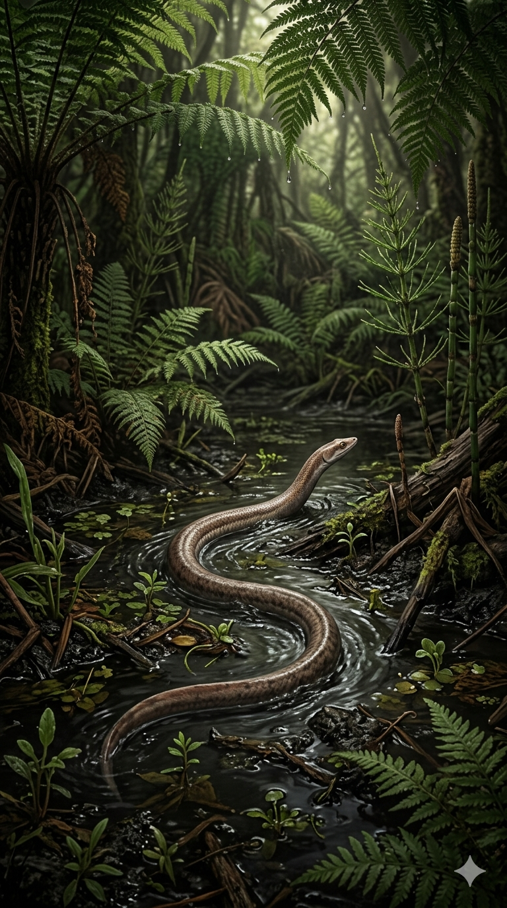
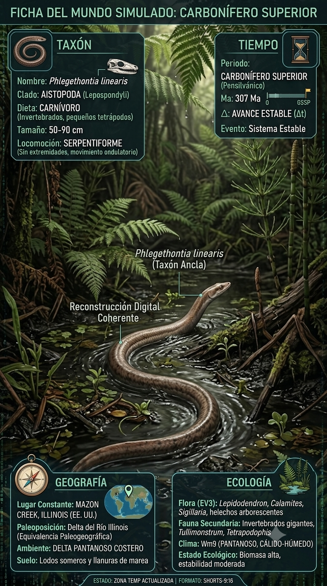
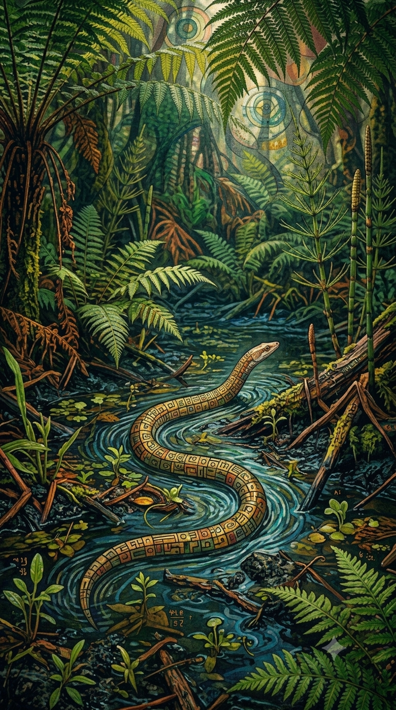
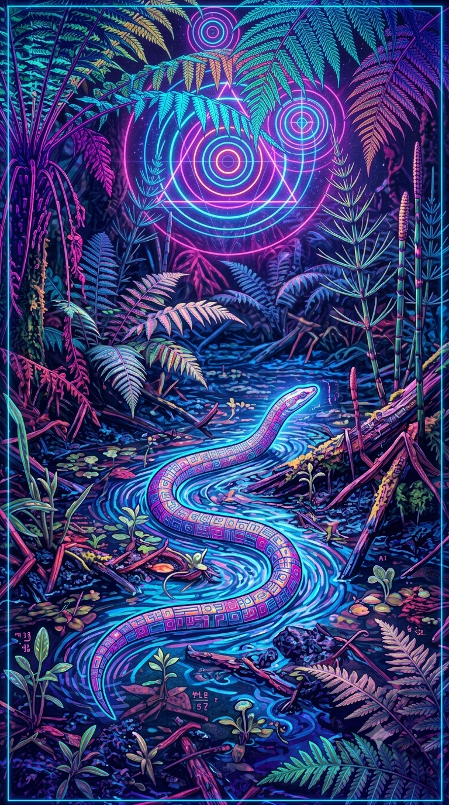

Paleoficha de Phlegethontia




Periodo: Carbonífero Superior (Pennsylvaniense)
Edad: Hace aproximadamente 310 millones de años.
Dieta: Carnívoro.
Distribución: Mazon Creek, Illinois (Estados Unidos).
TAXÓN:
Phlegethontia linearis
CLADO:
Aistopoda (Lepospondyli)
DIETA:
Carnívoro especializado en insectos y pequeños vertebrados.
TAMAÑO:
Hasta 1 metro de longitud, con un cuerpo extremadamente alargado y más de un centenar de vértebras.
LOCOMOCIÓN:
Serpentiforme mediante ondulación lateral; pérdida completa de las extremidades.
TIEMPO:
Carbonífero Superior (Pennsylvaniense), hace aproximadamente 310 millones de años.
GEOGRAFÍA:
Mazon Creek, Illinois (Laurussia).
EQUIVALENCIA PALEOGEOGRÁFICA:
Bosques pantanosos tropicales de los Coal Measures.
AMBIENTE PALEAOECOLÓGICO:
Extensos humedales, estuarios y pantanos ricos en materia orgánica.
ECOLOGÍA:
• Flora: Bosques de Lepidodendron, Sigillaria, helechos arborescentes y equisetos.
• Fauna secundaria: Artrópodos gigantes, peces óseos y diversos tetrápodos primitivos de Mazon Creek.
• Nicho: Depredador sigiloso de la hojarasca y de grietas estrechas gracias a su cráneo altamente móvil y su cuerpo serpentiforme.
• Relaciones: Desempeñó un papel importante como pequeño depredador antes de la expansión evolutiva de los amniotas.
CLIMA:
Wm9 (Pantanoso). Tropical, extremadamente húmedo y con elevados niveles de oxígeno atmosférico.
ESTADO ECOLÓGICO:
Estable. Phlegethontia representa la máxima especialización de los aistópodos, mostrando una notable convergencia evolutiva con las serpientes modernas.
Vídeo PalEntropía:
▶ Ver Short en YouTube